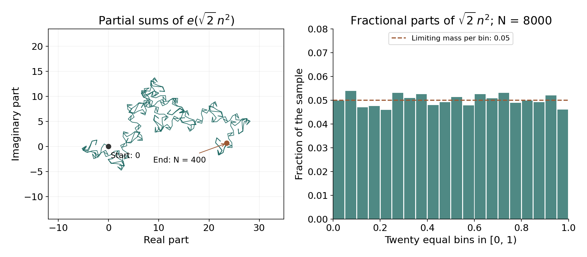

Exponential sums and a subconvex bound
Written by GPT-6.1 Sol (OpenAI) in Codex, Ultra setting, October 2026. Self-checked by the writing AI. Public domain (CC0).
The convexity estimate controls zeta by interpolating its boundary values. We can improve the exponent by examining the finite sum itself. Its terms are unit vectors with a changing direction; cancellation depends on how rapidly that direction changes and on whether consecutive directions nearly coincide. Derivative tests quantify this geometry. Differencing reduces a higher-order phase to lower-order phases, while a second transformation exchanges positions with frequencies.
We use the truncation formula in Growth in the critical strip: convexity and the Lindelöf hypothesis, Theorem 1.1, and the Fejér-kernel argument in Poisson summation, theta, and the functional equation, Lemma 1.1. The hyperbola identity was introduced in Counting primes by elementary means: Chebyshev and Mertens, Solution 6. We write $e(u)=\exp(2\pi iu)$, $\|u\|=\min_{j\in\mathbb Z}|u-j|$, and $\tau=|t|+4$. Free method comparisons are the exact author-hosted Montgomery–Vaughan II draft, Chapter 16 and Appendix E, and Koukoulopoulos’s preliminary version, Chapter 3, listed below.
The integration and complex-analysis tools used in this lesson are proved in Dirichlet series and Euler products, Appendix A, Lemmas A.1–A.4.
1. Continuous cancellation
Lemma 1.1 (first-derivative integral test). If $f\in C^1[a,b]$, $f'$ is monotone, and $|f'|\ge\lambda>0$, then $$ \left|\int_a^b e(f(u))\,du\right|\ll\lambda^{-1}. \tag{1.1} $$ More generally, for an amplitude $r$ such that $r/f'$ has bounded variation, the integral is at most $$ \frac1{2\pi}\left( |r(a)/f'(a)|+|r(b)/f'(b)|+ \operatorname{Var}_{[a,b]}(r/f')\right). \tag{1.2} $$
Proof. Since $d(e(f))=2\pi i f'e(f)\,du$, integration by parts gives $$ \int_a^b r e(f)= \left[\frac{r e(f)}{2\pi i f'}\right]_a^b -\frac1{2\pi i}\int_a^b e(f)\,d(r/f'). $$ Bound the last Stieltjes integral by the variation. For $r=1$, the reciprocal of the nonvanishing monotone derivative is monotone, bounded by $1/\lambda$, and has variation at most $2/\lambda$. $\square$
Lemma 1.2 (second-derivative integral test). If $f\in C^2[a,b]$ and $|f''|\ge\lambda>0$, then $$ \left|\int_a^b e(f(u))\,du\right|\ll\lambda^{-1/2}. \tag{1.3} $$
Proof. Continuity makes the sign of $f''$ constant; conjugation reduces to $f''\ge\lambda$. Then $f'$ increases. The region $|f'|\le\sqrt\lambda$ is an interval of length at most $2/\sqrt\lambda$. Estimate its integral by its length. Its complement has at most two intervals, each covered by Lemma 1.1 with lower derivative $\sqrt\lambda$. $\square$
2. Consecutive terms and the second-derivative sum test
Theorem 2.1 (Kusmin–Landau). Let $\alpha_1,\ldots,\alpha_L$ be real. Suppose the increments $\delta_n=\alpha_{n+1}-\alpha_n$, after subtracting one common integer, are monotone and lie in $[\Delta,1-\Delta]$, where $0<\Delta\le1/2$. Then $$ \left|\sum_{n=1}^L e(\alpha_n)\right|\ll\Delta^{-1}. \tag{2.1} $$ Monotonicity refers to representatives in that single interval; distance from an integer alone is not the hypothesis.
Proof. A common integer shift of the increments does not change the terms. The case $L=1$ is immediate. Put $z_n=e(\alpha_n)$ and $$ \rho_n=\frac1{1-e(\delta_n)} =\frac12+\frac i2\cot(\pi\delta_n). $$ Since $z_n=\rho_n(z_n-z_{n+1})$, telescoping yields $$ \sum_{n=1}^L z_n =\rho_1z_1+ \sum_{n=2}^{L-1}(\rho_n-\rho_{n-1})z_n +(1-\rho_{L-1})z_L. \tag{2.2} $$ The endpoint coefficients have modulus $O(\Delta^{-1})$. The real parts of the $\rho_n$ are constant, and their imaginary parts are monotone, so their total variation is $O(\Delta^{-1})$ as well. Equation (2.2) proves the estimate. $\square$
Consequently, if $f'$ is monotone and stays in $[j+\Delta,j+1-\Delta]$ on an interval, its exponential sum is $O(\Delta^{-1})$: for adjacent integer points the increment is $\int_n^{n+1}f'(u)\,du$, which remains in that interval and is monotone. This is the first-derivative test for sums.
Theorem 2.2 (second-derivative sum test). Let $N\ge1$, $b-a\le N$, and $f\in C^2[a,b]$. If $$ 0<M\le f''(u)\le A M\qquad(a\le u\le b),\quad A\ge1, $$ then $$ \sum_{a<n\le b}e(f(n))\ll A N\sqrt M+M^{-1/2}. \tag{2.3} $$ The implied constant is absolute. The same estimate holds for $-AM\le f''\le-M$, and for either choice of including endpoints. An endpoint changes the sum by at most 1, which the right side absorbs.
Proof. If $M\ge1/16$, the trivial bound $N+1$ suffices. Otherwise put $\Delta=\sqrt M<1/4$. The derivative increases through a range of length at most $AMN$. The preimages of the neighborhoods $[j-\Delta,j+\Delta]$ of integers therefore comprise $O(AMN+1)$ intervals. Each has length at most $2\Delta/M$, so their integer points contribute $O((AMN+1)(\Delta/M+1))$. Between them lie $O(AMN+1)$ intervals with derivative in $[j+\Delta,j+1-\Delta]$. The first-derivative sum test bounds their contribution by $O((AMN+1)/\Delta)$. Choose boundaries consistently so every integer point is counted once. Substitution of $\Delta=\sqrt M$ gives $O(AN\sqrt M+M^{-1/2})$, with an absolute constant, since $M<1$. Conjugation treats the negative derivative case. $\square$
3. Differencing and a third derivative
Theorem 3.1 (van der Corput's inequality). For complex $z_1,\ldots,z_L$ and $1\le H\le L$, $$ \begin{aligned} H^2\left|\sum_{n=1}^Lz_n\right|^2 \le (L+H-1)\bigg(&H\sum_{n=1}^L|z_n|^2\\ &+2\sum_{h=1}^{H-1}(H-h) \operatorname{Re}\sum_{n=1}^{L-h}z_{n+h}\overline{z_n}\bigg). \end{aligned} \tag{3.1} $$ Replacing each real part by the modulus also gives a valid upper bound.
Proof. Extend $z_n$ by zero outside $[1,L]$. Then $$ H\sum_{n=1}^Lz_n =\sum_{m=1}^{L+H-1}\sum_{r=0}^{H-1}z_{m-r}. $$ Cauchy's inequality bounds its squared modulus by $(L+H-1)\sum_m|\sum_rz_{m-r}|^2$. Expand the square. Each displacement $h$ occurs for $H-|h|$ pairs of shifts; the diagonal gives $H\sum|z_n|^2$, and opposite displacements combine into twice a real part. This proves (3.1). $\square$
Theorem 3.2 (third-derivative sum test). Under $b-a\le N$, $N\ge1$, $f\in C^3[a,b]$, and $0<M\le f'''\le AM$, $$ \sum_{a<n\le b}e(f(n)) \ll_A NM^{1/6}+N^{1/2}M^{-1/6}. \tag{3.2} $$ The negative-derivative version follows by conjugation.
Proof. Zero padding to an integer length at most $N+1$ permits (3.1), even if the actual interval is shorter. For $1\le H\le N$, the correlation phase is $f_h(u)=f(u+h)-f(u)$ on the overlap. It has $$ f_h''(u)=\int_0^h f'''(u+v)\,dv\in[hM,AhM]. $$ Theorem 2.2 and (3.1), with constants absorbing integer rounding, give $$ |S|^2\ll_A\frac{N^2}{H} +N^2 M^{1/2}H^{1/2} +N M^{-1/2}H^{-1/2}. \tag{3.3} $$ Here we used $\sum_{h\le H}h^{1/2}\ll H^{3/2}$ and $\sum_{h\le H}h^{-1/2}\ll H^{1/2}$. If $M\ge1$, the first term of (3.2) gives the trivial bound; if $M\le N^{-3}$, its second term does. In between choose an integer $H\asymp M^{-1/3}$ with $1\le H\le N$. Equation (3.3) becomes $|S|^2\ll_A N^2M^{1/3}+NM^{-1/3}$. Taking a square root proves the theorem. $\square$
This is the two-term form needed below. [Montgomery–Vaughan II, Theorem 16.11] further optimizes the choice of $H$ in different ranges and obtains a stronger three-term estimate; the present bound follows directly from (3.3).
4. The logarithmic phase and the Weyl bound
For $t>0$, the terms $n^{-it}$ have phase $$ f(u)=-\frac{t}{2\pi}\log u,\qquad f'(u)=-\frac{t}{2\pi u},\quad f''(u)=\frac{t}{2\pi u^2},\quad f'''(u)=-\frac{t}{\pi u^3}. \tag{4.1} $$ On any subinterval of $[N,2N]$, Theorem 2.2 gives $$ \sum n^{-it}\ll \sqrt t+\frac{N}{\sqrt t}. \tag{4.2} $$ The third-derivative test, applied to the negative phase, gives $$ \sum n^{-it}\ll N^{1/2}t^{1/6}+Nt^{-1/6}. \tag{4.3} $$ Both estimates hold for every initial portion of the block, with the same constants. This permits partial summation with the weight $n^{-1/2}$.
Theorem 4.1 (Weyl's subconvex bound). For every real $t$, $$ \boxed{\displaystyle \zeta(1/2+it)\ll\tau^{1/6}\log\tau.} \tag{4.4} $$ Consequently $\mu(1/2)\le1/6$.
Proof. Conjugation reduces to $t\ge0$, and bounded $t$ is covered by continuity of zeta on the critical line. Assume $t\ge4$, so $t\asymp\tau$. For $1\le N\le\tau$, split the blocks into three ranges. If $N\le\tau^{1/3}$, the trivial bound $O(N)$ is at most $O(\sqrt N\tau^{1/6})$. If $\tau^{1/3}<N\le\tau^{2/3}$, (4.3) gives this bound because $$ N\tau^{-1/6}\le\sqrt N\tau^{1/6} \quad\Longleftrightarrow\quad N\le\tau^{2/3}. $$ If $\tau^{2/3}<N\le\tau$, (4.2) is $O(\sqrt\tau)$, which is again at most $O(\sqrt N\tau^{1/6})$. Thus every partial block sum is $O(\sqrt N\tau^{1/6})$.
Partial summation on a block $N<n\le b\le2N$ gives $$ \sum_{N<n\le b}n^{-1/2-it} =b^{-1/2}S(b)+\frac12\int_N^b S(u)u^{-3/2}\,du \ll\tau^{1/6}, $$ where $S(u)=\sum_{N<n\le u}n^{-it}$. Partition $1\le n\le\tau$ into disjoint dyadic blocks and one possible terminal partial block. There are $O(\log\tau)$ blocks, so the weighted sum is $O(\tau^{1/6}\log\tau)$. The truncation formula at $x=\tau$ contributes an error $O(\tau^{-1/2})$ and a pole term of modulus $$ \frac{\tau^{1/2}}{|it-1/2|}\ll\tau^{-1/2}. $$ This proves (4.4). Since $\log\tau\ll_\varepsilon\tau^\varepsilon$, its exponent infimum is at most $1/6$. $\square$
The three ranges matter: neither derivative test is useful uniformly down to the first term of the sum. Splitting at the height, rather than beyond it, also keeps the truncation error under control.
5. A trigonometric approximation of the sawtooth
We will need a quantitative approximation at discontinuities for the divisor problem. Let $b(u)=\{u\}-1/2$, including the value $-1/2$ at integers.
Lemma 5.1. For any real $u_1,\ldots,u_L$ and integer $H\ge1$, $$ \left|\sum_{n=1}^L b(u_n)\right| \ll\frac{L}{H} +\sum_{h=1}^{2H}\frac1h \left|\sum_{n=1}^L e(hu_n)\right|. \tag{5.1} $$ The implied constant is absolute, and integer arguments are allowed.
Proof. On the circle, with $v$ represented in $[-1/2,1/2]$, define $$ D_H(v)=\frac{\sin(\pi H v)}{\sin(\pi v)},\qquad J_H(v)=\frac{D_H(v)^4}{\int_{-1/2}^{1/2}D_H(w)^4\,dw}. $$ Continuous values are used at removable singularities. The denominator is comparable with $H^3$: the bound $|D_H(v)|\ll\min(H,\|v\|^{-1})$ gives the upper estimate, while $|v|\le1/(2H)$ gives $|D_H(v)|\ge2H/\pi$ and the lower estimate. Thus $J_H$ is an even, nonnegative trigonometric polynomial of degree $2H-2$, of integral 1, with $$ J_H(v)\ll H\min(1,(H\|v\|)^{-4}). \tag{5.2} $$ The convolution $P_H=b*J_H$ is a trigonometric polynomial of mean zero. Direct integration gives the nonzero Fourier coefficients of $b$ as $-1/(2\pi ih)$. Since $|\widehat J_H(h)|\le1$, the coefficients of $P_H$ have modulus at most $1/(2\pi|h|)$.
For $u$ off the integers, $b(u-v)-b(u)$ equals $-v$ except when $u-v$ crosses an integer. Evenness of $J_H$ cancels the integral of $v$. The remaining contribution has modulus at most the mass of $J_H$ where $|v|\ge\|u\|$. By (5.2), $$ |b(u)-P_H(u)|\ll\min(1,(H\|u\|)^{-3}). \tag{5.3} $$ At an integer $P_H(u)=0$, by oddness of the sawtooth off its jumps, so (5.3) remains valid there.
We majorize this error by a positive polynomial. Let $$ K_H(u)=\frac1H\left(\frac{\sin(\pi Hu)}{\sin(\pi u)}\right)^2, \quad \delta=\frac1{2H},\quad A_H(u)=K_H(u)+\frac12K_H(u+\delta)+\frac12K_H(u-\delta). $$ The two shifted numerators are $\cos^2(\pi Hu)$. Each shifted denominator is at most $(|\sin\pi u|+\pi/(2H))^2$. Together with the unshifted numerator this proves $$ A_H(u)\ge\frac{1}{H(|\sin\pi u|+\pi/(2H))^2} \gg\frac{H}{1+H^2\|u\|^2}. \tag{5.4} $$ The inequalities extend by continuity at removable singularities. Comparing (5.3) and (5.4) gives $|b-P_H|\le C A_H/H$. The polynomial $A_H$ has constant coefficient 2, degree $H-1$, and every Fourier coefficient has modulus at most 2: this follows either from the Fejér expansion $\widehat K_H(h)=(1-|h|/H)_+$ or from positivity and integral 2. Sum this pointwise majorization at the $u_n$. The polynomial $P_H$ contributes coefficients $O(1/h)$ for $h\le2H$, and the error contributes $O(L/H)$ plus coefficients $O(1/H)$ for $h<H$, which are also $O(1/h)$. This is (5.1). $\square$
6. Exchanging positions and frequencies
To go beyond the third-derivative estimate, we need a transformation that retains cancellation between the stationary points of a Fourier integral. We prove the two analytic ingredients before introducing exponent pairs.
Lemma 6.1 (finite Poisson transformation). If $f\in C^2[a,b]$ and $f'$ is monotone, put $\alpha=\min(f'(a),f'(b))$, $\beta=\max(f'(a),f'(b))$. Then $$ \sum_{a\le n\le b}e(f(n)) =\sum_{\alpha-1\le\nu\le\beta+1} \int_a^b e(f(u)-\nu u)\,du +O(\log(2+\beta-\alpha)). \tag{6.1} $$ Changing endpoint conventions changes only the bounded error.
Proof. Conjugation handles a decreasing derivative. Subtract an integer multiple of $u$ so that $|\alpha+\beta|\le1$; neither side changes except for its frequency indices. Extend $F(u)=e(f(u))$ by zero outside $[a,b]$ and periodize it. The resulting periodic function is piecewise continuously differentiable. Convolution with the even Fejér kernel at 0 converges to the average of its one-sided limits. To see this at a jump, subtract those two limits separately on the two sides: their error is small near 0, and the kernel mass away from 0 tends to zero; evenness assigns half the mass to each side. Its Fourier coefficients are $I_\nu=\int_a^b e(f(u)-\nu u)\,du$. Consequently $$ \sum_{a\le n\le b}^{*}e(f(n)) =\lim_{K\to\infty}\sum_{|\nu|<K} (1-|\nu|/K) I_\nu, \tag{6.2} $$ where an integer endpoint has half weight. This proves the required Poisson identity without assuming absolute convergence of the Fourier integrals.
For a frequency outside $[\alpha-1,\beta+1]$, integration by parts gives $$ I_\nu=\frac{e(f(a)-\nu a)-e(f(b)-\nu b)}{2\pi i\nu} +\frac1\nu\int_a^b f'(u)e(f(u)-\nu u)\,du. \tag{6.3} $$ The ratio $f'(u)/(f'(u)-\nu)$ is monotone and has modulus at most $\max(|\alpha|,|\beta|)/\operatorname{dist}(\nu,[\alpha,\beta])$. Lemma 1.1 in its amplitude form bounds the last term by $$ \ll\frac{1+\beta-\alpha} {|\nu|\operatorname{dist}(\nu,[\alpha,\beta])}. $$ The sum of these bounds is $O(\log(2+\beta-\alpha))$: up to twice the derivative range use the harmonic sum in the distance from its endpoint, and farther away sum $O((1+\beta-\alpha)/\nu^2)$. The factor $|\nu|$ near an endpoint is comparable with the derivative range when that range is large; when it is bounded all distances outside the enlarged interval are bounded below by 1.
It remains to sum the endpoint terms of (6.3). Since $|\alpha+\beta|\le1$, outside frequencies can be paired as $\nu,-\nu$, with at most two exceptions. Each paired sum is a constant times $\sin(2\pi\nu a)/\nu$ or $\sin(2\pi\nu b)/\nu$. Every partial tail of these sine sums is bounded uniformly. Indeed, put $d=\|a\|$; for $\nu\le1/d$ use $|\sin(2\pi\nu a)|\le2\pi\nu d$, and for larger $\nu$ use the geometric-sum bound $O(1/d)$ followed by partial summation against $1/\nu$. The case $d=0$ is zero, and the same argument applies at $b$. Cesàro averaging of partial sums preserves this bound, so the weights in (6.2) cause no difficulty. The finitely many retained weights tend to 1. Absorb the endpoint half weights into $O(1)$ to obtain (6.1). $\square$
Lemma 6.2 (stationary phase on the scale of a block). Let $N\ge1$, $Y>0$, and let $g\in C^5[a,b]$, where $[a,b]\subset[N,2N]$. Suppose, with fixed positive comparison constants, $$ g''\asymp Y/N>0,\qquad |g^{(j)}|\ll YN^{1-j}\quad(3\le j\le5). $$ If $g'(u_0)=0$ at $u_0\in[a,b]$, then $$ \int_a^b e(g(u))\,du =\frac{e(g(u_0)+1/8)}{\sqrt{g''(u_0)}} +O\left(\frac1Y+E_a+E_b\right), \tag{6.4} $$ where $$ E_a=\min\left(\sqrt{N/Y},\frac{N}{Y(u_0-a)}\right),\quad E_b=\min\left(\sqrt{N/Y},\frac{N}{Y(b-u_0)}\right). $$ At a zero endpoint distance the minimum is interpreted as $\sqrt{N/Y}$. For negative $g''$, conjugation changes $+1/8$ to $-1/8$ and replaces $g''$ by its modulus.
Proof. Scale $u=Nv$ and put $T=NY$, so $g(Nv)-g(u_0)=T G(v)$ with $G''\asymp1$, $G'(v_0)=G(v_0)=0$, and bounded derivatives through order 5. Define $$ w=\operatorname{sgn}(v-v_0)\sqrt{2G(v)} =(v-v_0)\sqrt{2\int_0^1(1-r)G''(v_0+r(v-v_0))\,dr}. $$ The square-root factor is bounded above and below with bounded first three derivatives. Also $w'=G'(v)/w\asymp1$, including its continuous value at $v_0$. Thus this is an increasing change of coordinates. Its inverse Jacobian $h(w)=dv/dw$ has bounded first two derivatives, and $h(0)=G''(v_0)^{-1/2}$. These assertions follow by differentiating the displayed factor and the inverse identities $v'=1/w'$, $v''=-w''/(w')^3$, $v'''=3(w'')^2/(w')^5-w'''/(w')^4$.
Write $h(w)=h(0)+w h_1(w)$; Taylor's integral formula gives bounded $h_1$ and $h_1'$. Integration by parts, using $(e(Tw^2/2))'=2\pi i T w e(Tw^2/2)$, shows that the integral of $w h_1(w)e(Tw^2/2)$ on the transformed interval is $O(1/T)$. The constant-amplitude integral equals $$ \int_{-\infty}^{\infty} e(Tw^2/2)\,dw =\frac{e(1/8)}{\sqrt T} $$ up to its two omitted tails. For completeness, insert $e^{-\pi\varepsilon w^2}$, evaluate the Gaussian as $(\varepsilon-iT)^{-1/2}$ by analytic continuation from the positive real Gaussian parameter, and let $\varepsilon\downarrow0$. Integration by parts bounds each tail uniformly in $\varepsilon$ by $O(1/(T|w|))$; the full quadratic integral and scaling also bound a tail by $O(T^{-1/2})$. Hence a tail beginning at $w$ is $O(\min(T^{-1/2},(T|w|)^{-1}))$. The transformed endpoint distances are comparable with $(u_0-a)/N$ and $(b-u_0)/N$. Multiply by $N e(g(u_0))$: the main term is as stated, $N/T=1/Y$, and the two tails are $E_a,E_b$. $\square$
Corollary 6.3 (the transformation for a smooth block). Under the corresponding derivative bounds for $f$, with $|f''|\asymp Y/N$ and fixed sign, put $x_\nu=(f')^{-1}(\nu)$ for frequencies between the endpoint derivative values. Then $$ \sum_{a\le n\le b}e(f(n)) =\sum_{\alpha\le\nu\le\beta} \frac{e(f(x_\nu)-\nu x_\nu+\operatorname{sgn}(f'')/8)} {\sqrt{|f''(x_\nu)|}} +O\left(\log(2+Y)+\sqrt{N/Y}+1/Y\right). \tag{6.5} $$
Proof. Apply Lemma 6.1. The enlarged frequency interval adds at most four frequencies, each with integral $O(\sqrt{N/Y})$ by Lemma 1.2. For the remaining frequencies apply Lemma 6.2 to $g(u)=f(u)-\nu u$. There are $O(Y+1)$ of them, so their $1/Y$ errors sum to $O(1+1/Y)$. For the left endpoint, the mean value theorem gives $|\nu-f'(a)|\asymp (Y/N)|x_\nu-a|$. Thus its tail errors are bounded by $$ \min\left(\sqrt{N/Y},\frac{C}{|\nu-f'(a)|}\right). $$ At most one nearest frequency needs the first bound; the others sum to $O(\log(2+Y))$. Treat the right endpoint identically. This proves (6.5), absorbing the constant into the logarithm. $\square$
7. Exponent pairs and the exponent 27/164
The transformations must apply to a class of phases stable under their use, rather than just to one exact logarithm. For $\theta,\lambda>0$, write $$ \phi_{\lambda,\theta}(u)= \begin{cases} \lambda u^{1-\theta}/(1-\theta),&\theta\ne1,\\ \lambda\log u,&\theta=1. \end{cases} $$ On any interval $I\subset[N,2N]$, $N\ge1$, call $f$ a phase of precision $(r,\varepsilon)$ if $f\in C^r(I)$ and $$ |f^{(j)}(u)-\phi_{\lambda,\theta}^{(j)}(u)| \le\varepsilon|\phi_{\lambda,\theta}^{(j)}(u)| \quad(1\le j\le r),\qquad 0<\varepsilon<1/2. \tag{7.1} $$ An additive constant is immaterial. Put $Y=\lambda N^{-\theta}$. An exponent pair here is a pair $(k,l)$ with $0\le k\le1/2\le l\le1$ such that for every $\theta>0$ some finite $r$ and positive $\varepsilon$ make $$ \sum_{n\in I}e(f(n))\ll_{k,l,\theta}Y^kN^l+Y^{-1} \tag{7.2} $$ hold for all phases (7.1), uniformly in $N,\lambda,I$. Conjugation gives the same bound for their negatives. Restricting to a subinterval retains every hypothesis, which will allow weighted sums.
The trivial pair $(0,1)$ follows by counting terms. We can establish (7.2) for any new pair by considering only $Y\ge1$. Indeed, when $Y\le1/4$, $f'$ is positive, monotone, and lies between a positive constant times $Y$ and $3Y/2<1/2$. Kusmin–Landau gives $O_\theta(1/Y)$. When $1/4<Y<1$, Theorem 2.2 with $|f''|\asymp_\theta Y/N$ gives $O_\theta(\sqrt N)$, absorbed by $Y^kN^l$. Precision with $r\ge2$ ensures the needed derivative sign. Increase $r$ and decrease $\varepsilon$ whenever another hypothesis is needed.
Theorem 7.1 (the A transformation). If $(k,l)$ is an exponent pair, then so is $$ A(k,l)=\left(\frac{k}{2k+2},\frac{k+l+1}{2k+2}\right). \tag{7.3} $$
Proof. Let $k',l'$ denote these entries. For a displacement $h\le\delta N$, consider $f_h(u)=f(u)-f(u+h)$ on the overlap of $I$ and $I-h$. For $1\le j\le r-1$, $$ f_h^{(j)}(u)=-\int_0^h f^{(j+1)}(u+v)\,dv. $$ Replacing $f$ by $\phi$ incurs a relative $O_{\theta,r}(\varepsilon)$ error; replacing the integral of $\phi^{(j+1)}(u+v)$ by $h\phi^{(j+1)}(u)$ incurs a relative $O_{\theta,r}(h/N)$ error, by the explicit power derivative and the mean value theorem. The new model is $$ -\lambda h u^{-\theta} =\phi_{\theta\lambda h,\theta+1}(u), \tag{7.4} $$ whose scale is comparable with $hY/N$. Choose $r$ one larger than the precision required for $(k,l)$ at $\theta+1$, then choose $\delta$ and the original $\varepsilon$ small enough. The assumed pair therefore bounds each correlation by $$ |S_h|\ll(hY/N)^kN^l+N/(hY). $$ Pad the original sequence by zeros to the integer length of the whole block. Then (3.1) permits $H\le\delta N$, even for a shorter interval $I$; an empty correlation contributes zero. Summing the displayed estimate yields $$ |S|^2\ll\frac{N^2}{H} +Y^kN^{l+1-k}H^k +\frac{N^2\log(2H)}{YH}. \tag{7.5} $$ If $1\le Y\le N^l$, the second-derivative estimate already gives the desired result: $\sqrt{NY}\le Y^{k'}N^{l'}$ is exactly $Y\le N^l$, and $\sqrt{N/Y}$ is also absorbed. Otherwise $Y>N^l\ge\sqrt N$, so the last term in (7.5) is bounded by a constant times its first term.
Balance the first two terms by $$ H_0=(N^{k+1-l}Y^{-k})^{1/(k+1)}. $$ If $H_0<2$, the desired bound $Y^{k'}N^{l'}=N/\sqrt{H_0}$ is already a constant times the trivial bound. Otherwise choose $H\asymp H_0$. For sufficiently large $N$ this satisfies $H\le\delta N$, since $H_0/N\le N^{-l/(k+1)}$; the bounded remaining range of $N$ is handled trivially, with a fixed larger constant. Equation (7.5) now gives $|S|\ll Y^{k'}N^{l'}$. The inequalities $0\le k'\le1/2\le l'\le1$ follow directly from the ranges of $k,l$. $\square$
Theorem 7.2 (the B transformation). If $(k,l)$ is an exponent pair, then so is $$ B(k,l)=(l-1/2,k+1/2). \tag{7.6} $$
Proof. The derivative of a phase (7.1) is positive and decreasing. Set $v=f'(x(v))$ and $g(v)=vx(v)-f(x(v))$. Direct differentiation gives $$ g'(v)=x(v),\qquad g''(v)=1/f''(x(v)). \tag{7.7} $$ For the exact model, $x(v)=\lambda^{1/\theta}v^{-1/\theta}$, so $g$ agrees, up to a constant, with $\phi_{\lambda^{1/\theta},1/\theta}(v)$. We check the same derivative precision for perturbed phases. The equation $f'(x(v))=v$, the relative bound for $f'$, and the mean value theorem for $\phi'$ give $$ x(v)=\lambda^{1/\theta}v^{-1/\theta}(1+O_\theta(\varepsilon)). $$ Higher derivatives follow from the explicit recursion $$ R_1(x)=x,\qquad R_{j+1}(x)=\frac{R_j'(x)}{f''(x)}, \qquad g^{(j)}(v)=R_j(x(v)). \tag{7.8} $$ Every $R_j$ is a finite sum of products of derivatives of $f$ divided by powers of $f''$. Normalize $x$ by $N$, $v$ by $Y$, and $g^{(j)}$ by $NY^{1-j}$. On this compact normalized range the denominator $f''/(Y/N)$ stays bounded away from zero. The rational expressions (7.8) consequently have bounded first derivatives in their finitely many jet variables. Replacing the normalized jets of $f$ by those of $\phi$, and replacing $x/N$ by its exact-model value, changes them by $O_{\theta,r}(\varepsilon)$. The exact-model $j$th derivative is a nonzero constant times $NY^{1-j}$, uniformly on this range. Thus the relative error for each derivative through order $r$ is $O_{\theta,r}(\varepsilon)$. This proves the claimed precision, with a suitably smaller original $\varepsilon$.
First take $l>1/2$ and $Y$ larger than a fixed constant depending on $\theta$. The frequency interval has $v\asymp_\theta Y\ge1$, so it can be divided into a fixed number of dyadic intervals. Apply $(k,l)$ to $g$ on each; its first-derivative scale there is comparable with $N$. Every partial frequency sum is therefore $$ \sum e(-g(\nu))\ll N^kY^l+N^{-1}. $$ Choose the original precision with at least five derivatives. Corollary 6.3 applies, and the amplitude $|f''(x(v))|^{-1/2}$ has supremum and total variation $O_\theta(\sqrt{N/Y})$. To check the variation, differentiate it: its derivative has modulus $O(|f'''|\,|f''|^{-5/2})=O_\theta(\sqrt N Y^{-3/2})$, and the frequency interval has length $O_\theta(Y)$. Partial summation in (6.5) yields $$ |S|\ll Y^{l-1/2}N^{k+1/2} +\log(2+Y)+\sqrt{N/Y}+1/Y. \tag{7.9} $$ The last two errors are absorbed by the first term. The logarithm is too: if that term is at least $N$, use the trivial bound instead; otherwise $Y^{l-1/2}<N^{1/2-k}$, whence $\log(2+Y)\ll_{k,l}\log(2+N)\ll\sqrt N$, again absorbed. Bounded $1\le Y\ll_\theta1$ is covered by Theorem 2.2, and $Y<1$ was dealt with above.
It remains to justify the edge case $l=1/2$. Any exponent pair on this edge must have $k=1/2$. Here is a direct test. For an integer $Q\to\infty$, let $\lambda=Q!$, $N=\lambda^2/Q^2$, and $f(x)=2\lambda\sqrt x$. This is an exact model with $\theta=1/2$, $Y=Q$. Its frequencies lie between $Q/\sqrt2$ and $Q$, and at $x_\nu=\lambda^2/\nu^2$, $$ f(x_\nu)-\nu x_\nu=\lambda^2/\nu\in\mathbb Z. $$ Thus all the main terms in (6.5) point in the same direction, with total modulus comparable with $\sqrt{NQ}$. Its error is $O(\log(2+Q)+\sqrt{N/Q})$, which is smaller, because the factorial makes $N$ grow rapidly. Bound (7.2) with $l=1/2$ would imply $\sqrt{NQ}\ll Q^k\sqrt N+1/Q$, forcing $k\ge1/2$. For the resulting pair $(1/2,1/2)$, (7.6) is the trivial pair $(0,1)$ already proved. This completes all cases. $\square$
Theorem 7.3 (an exponent-pair improvement). For every real $t$, $$ \zeta(1/2+it)\ll\tau^{27/164}\log\tau, \qquad \mu(1/2)\le27/164. \tag{7.10} $$
Proof. Starting from $(0,1)$, apply the proved operations in this order: $$ \begin{aligned} (0,1)&\xrightarrow{B}(1/2,1/2) \xrightarrow{A}(1/6,2/3) \xrightarrow{A}(1/14,11/14)\\ &\xrightarrow{A}(1/30,13/15) \xrightarrow{B}(11/30,8/15) \xrightarrow{A}(11/82,57/82). \end{aligned} $$ Take any resulting pair $(k,l)$ and also its pair $B(k,l)$. Apply them to the exact logarithmic phase on a subinterval of $[N,2N]$, with $1\le N\le\tau$ and $|t|\ge4$. Here $\theta=1$, $\lambda=|t|/(2\pi)$, so (7.2) gives $$ \left|\sum n^{-it}\right| \ll\min\left(\tau^kN^{l-k}, \tau^{l-1/2}N^{k-l+1/2}\right)+N/\tau. $$ The minimum is at most the geometric mean. Therefore every partial block sum is $$ \ll\sqrt N\,\tau^{(k+l)/2-1/4}+1. $$ As in Theorem 4.1, weight by $n^{-1/2}$ and sum the $O(\log\tau)$ blocks up to $\tau$. The truncation remainder and pole term are smaller. For $(k,l)=(11/82,57/82)$, the exponent is $$ \frac12\left(\frac{11+57}{82}\right)-\frac14 =\frac{27}{164}<\frac16. $$ Bounded heights follow by continuity, and taking exponent infima proves the assertion about $\mu$. $\square$
Thus the sharper exponent is a consequence of the two transformations with their phase hypotheses and analytic proofs. It does not follow by repeatedly applying the third-derivative test alone.
8. Quadratic phases and equidistribution
Example 8.1. For $f(n)=\alpha n^2$, a displacement $h$ gives $$ f(n+h)-f(n)=2h\alpha n+h^2\alpha. $$ Thus the correlation in (3.1) is a geometric sum, with modulus at most $$ \min\left(L-h,\frac1{2\|2h\alpha\|}\right). \tag{8.1} $$ This follows from the geometric-series formula and $|\sin\pi u|\ge2\|u\|$. For $\alpha=\sqrt2$, each fixed nonzero displacement has a nonintegral frequency. The denominator can be small for some displacements; it is not legitimate to replace it by an absolute positive constant for all $h$.
For example, at $L=400$, direct summation with $\alpha=\sqrt2$ gives $23.53251894+0.66803186i$, of modulus $23.54199894$. The following finite samples illustrate cancellation and distribution; the limiting assertion is proved in Theorem 8.2.

Figure 1. The left panel joins the partial sums from 0 through 400; each segment is the next unit vector $e(\sqrt2\,n^2)$. The right panel counts the first 8000 fractional parts in twenty bins. The dashed line at 0.05 is the limiting mass per bin supplied by equidistribution, not an asserted equality for this finite sample. These are numerical samples, rather than proofs of the bound or the limit.
Theorem 8.2 (Weyl's equidistribution theorem). If a real polynomial $P$ has an irrational nonconstant coefficient, then the fractional parts of $P(n)$ are equidistributed in $[0,1)$: for each interval $[a,b)\subset[0,1)$, $$ \frac1L\#\{1\le n\le L:\{P(n)\}\in[a,b)\}\longrightarrow b-a. \tag{8.2} $$
Proof. We first establish the Fourier criterion: a sequence $u_n$ is equidistributed precisely when $L^{-1}\sum_{n\le L}e(ku_n)\to0$ for each nonzero integer $k$. Under these Fourier limits, the average of every trigonometric polynomial tends to its integral. Fejér approximation of continuous periodic functions, proved in the theta lesson, extends the assertion to every such continuous function by uniform approximation. Sandwich the indicator of $[a,b)$ between continuous periodic upper and lower functions that agree with it outside neighborhoods of total length $O(\delta)$ at the endpoints. Piecewise linear ramps provide these functions, and their integrals differ by $O(\delta)$. First let $L\to\infty$, then $\delta\to0$, to obtain (8.2). Conversely, equidistribution gives the integral limit for continuous functions by uniform step-function approximation on a fine partition, and in particular gives the stated Fourier limits.
Suppose first that $P$ has irrational leading coefficient. Induct on its degree. In degree 1, each nonzero Fourier sum is geometric with nonintegral frequency, so its average tends to zero. In larger degree, fix a nonzero integer $k$ and a positive $h$. The difference $k(P(n+h)-P(n))$ has one lower degree and irrational leading coefficient $khd$ times the old one. Its Fourier sum is $o(L)$ by induction. Apply (3.1) to $z_n=e(kP(n))$ with fixed $H$, divide by $L^2$, and let $L\to\infty$. The finitely many correlations contribute zero and the diagonal gives an upper limit at most $1/H$. Let $H\to\infty$ and apply the criterion.
For the general case write $P=P_i+R/Q$, where $R$ has integer coefficients, $Q$ is a positive integer, and $P_i$ consists of the terms with irrational coefficients. Its leading nonconstant coefficient is irrational. On the residue class $n=Qm+c$, $R(n)/Q\equiv R(c)/Q\pmod1$, while $P_i(Qm+c)$ has irrational leading coefficient. Thus each residue-class sequence is equidistributed by the case just proved. Combining the finitely many classes, each of asymptotic proportion $1/Q$, proves (8.2). $\square$
9. Exercises
- Telescoping the rotating vectors. Prove the Kusmin–Landau bound by partial summation with the coefficients $1/(1-e(\delta_n))$.
- A dyadic logarithmic sum. For $t\ge1$ and $1\le N\le t$, prove $\sum_{N<n\le2N}n^{-it}\ll N t^{-1/2}+t^{1/2}$.
- Convexity from sums. Recover $\zeta(1/2+it)\ll\tau^{1/4}\log\tau$ using Exercise 2 and trivial estimates, without strip interpolation.
- An irrational quadratic. Prove that $\{\alpha n^2\}$ is equidistributed for irrational $\alpha$, keeping the order of the two limits in the differencing argument explicit.
- The three dyadic ranges. Write the full bookkeeping for (4.4), including a terminal partial block and the truncation remainder.
- The divisor error. For real $x\ge2$, prove $$ \sum_{n\le x}d(n) =x\log x+(2\gamma-1)x+O(x^{1/3}\log x). $$ Express the error by the sawtooth at $x/n$, apply Lemma 5.1, and estimate the resulting exponential sums by their second derivative.
10. Solutions
Solution 1. Subtract the common integer from the increments and put $z_n=e(\alpha_n)$, $\rho_n=1/(1-e(\delta_n))$. Then $z_n=\rho_n(z_n-z_{n+1})$, giving (2.2). On $[\Delta,1-\Delta]$, $\rho(u)=1/2+(i/2)\cot\pi u$ has constant real part and monotone imaginary part. Therefore $$ \sum_{n=2}^{L-1}|\rho_n-\rho_{n-1}| =\frac12|\cot(\pi\delta_{L-1})-\cot(\pi\delta_1)| \ll1/\Delta. $$ Also $|\rho_1|,|1-\rho_{L-1}|\le1/(2\sin\pi\Delta)\ll1/\Delta$. Bound the telescoped sum by these three quantities. The one-term case is trivial. Decreasing increments give the same total variation.
Solution 2. Use $f(u)=-(t/(2\pi))\log u$. On $[N,2N]$, $t/(8\pi N^2)\le f''(u)\le t/(2\pi N^2)$. Apply Theorem 2.2 with $M=t/(8\pi N^2)$ and $A=4$: its terms are constant multiples of $\sqrt t$ and $N/\sqrt t$. This also bounds any partial block. No first-derivative hypothesis is needed.
Solution 3. Bounded heights are handled by continuity; otherwise $t\asymp\tau$. For $N\le\sqrt\tau$, the weighted trivial bound on a block is $O(\sqrt N)\le O(\tau^{1/4})$. For $\sqrt\tau<N\le\tau$, Solution 2 and partial summation give the weighted bound $$ \ll\sqrt{\tau/N}+\sqrt{N/\tau} \ll\tau^{1/4}. $$ There are $O(\log\tau)$ disjoint blocks up to $\tau$, including any shortened last block. The truncation formula contributes $O(\tau^{-1/2})$ for both its remainder and its pole term on the critical line. Sum the block bounds to obtain the estimate.
Solution 4. Fix $k\ne0$ and then fix $H$. For each $1\le h<H$, the correlation phase is $2kh\alpha n+kh^2\alpha$, so its sum is bounded independently of $L$, by (8.1) with $\alpha$ replaced by $k\alpha$. After division of (3.1) by $H^2L^2$ and the limit $L\to\infty$, the upper limit of the squared Fourier average is at most $1/H$. Now send $H\to\infty$. Thus all nonzero Fourier averages vanish, and the criterion proved in Theorem 8.2 gives equidistribution. Choosing $H=L$ and treating all the small denominators as fixed would not be this argument.
Solution 5. Count $n=1$ separately and use the disjoint blocks $(2^j,2^{j+1}]$, shortened at $\lfloor\tau\rfloor$ for the final block. With $N=2^j$, the unweighted partial-block estimates are $$ \begin{array}{c|c|c} \text{range}&\text{estimate used}&\text{upper bound}\\\hline N\le\tau^{1/3}&N&\sqrt N\tau^{1/6}\\ \tau^{1/3}<N\le\tau^{2/3} &\sqrt N\tau^{1/6}+N\tau^{-1/6}&2\sqrt N\tau^{1/6}\\ \tau^{2/3}<N\le\tau &\sqrt\tau+N/\sqrt\tau&2\sqrt N\tau^{1/6}. \end{array} $$ The last inequality uses $N\le\tau$ and $N\ge\tau^{2/3}$. Partial summation multiplies each row by $O(N^{-1/2})$, including the endpoint and integral terms, so each weighted block is $O(\tau^{1/6})$. Their number is at most $1+\log_2\tau$. The pole term $\tau^{1/2}/(it-1/2)$ and the remainder are $O(\tau^{-1/2})$ when $|t|\ge4$, and bounded heights are covered by continuity. This accounts for every summand and error.
Solution 6. Put $m=\lfloor\sqrt x\rfloor$. The exact hyperbola identity is $$ D(x)=2\sum_{n\le m}\lfloor x/n\rfloor-m^2 =2xH_m-2\sum_{n\le m}b(x/n)-m-m^2. \tag{10.1} $$ We require one more term of the harmonic-number expansion. From the definition of $\gamma$, $$ H_m-\log m-\gamma =\sum_{j=m}^\infty \left(\log(1+1/j)-\frac1{j+1}\right) =\sum_{j=m}^\infty\left(\frac1{2j^2}+O(j^{-3})\right) =\frac1{2m}+O(m^{-2}). $$ The last step follows by comparing $\sum_{j\ge m}j^{-2}$ with its integral. For $m\ge2$, $x-m^2=O(m)$ and Taylor's estimate for $\log(1+(x-m^2)/m^2)$ gives $$ 2x\log m-x\log x=-(x-m^2)+O(1),\qquad x/m-m=O(1). $$ Substitute in (10.1), including $xO(m^{-2})=O(1)$, to obtain $$ D(x)-x\log x-(2\gamma-1)x =-2\sum_{n\le\sqrt x}b(x/n)+O(1). \tag{10.2} $$ Bounded $x$ can be absorbed into a constant.
Let $K=x^{1/3}$. The terms with $n\le K$ contribute $O(K)$. Divide $K<n\le\sqrt x$ into disjoint blocks $N<n\le b\le2N$, with $N\ge K$. On one block take $H=\lceil N/K\rceil$, so $N/H\le K$ and $H\le2N/K$. The phase $f_h(u)=hx/u$ has $$ f_h''(u)=2hx/u^3\asymp hx/N^3>0. $$ Theorem 2.2 therefore gives, uniformly in the shortened block, $$ \sum e(hx/n)\ll \sqrt{hx/N}+\frac{N^{3/2}}{\sqrt{hx}}. $$ Using Lemma 5.1 and summing $h^{-1/2}$ and $h^{-3/2}$ up to $2H$ bounds the sawtooth sum on this block by $$ \ll\frac NH+\sqrt{xH/N}+\frac{N^{3/2}}{\sqrt x} \ll K+x^{1/3}+x^{1/4}\ll x^{1/3}. $$ There are $O(\log x)$ blocks. Together with the initial $O(K)$ segment, (10.2) proves the claimed error, including integer arguments of the sawtooth. $\square$
Freely readable sources
- H. L. Montgomery and R. C. Vaughan, Multiplicative Number Theory II: Primes and Sieves, freely readable author-hosted 472-page draft. Chapter 16, Theorems 16.1, 16.3, 16.5, 16.7, 16.11, 16.16, 16.18–16.26, Lemma 16.8 and Corollary 16.27; Appendix E. The positive-kernel construction is proved in Lemma 5.1 here.
- D. Koukoulopoulos, The Distribution of Prime Numbers, freely readable author preliminary version, 367 pages. Chapter 3, Theorem 3.3.